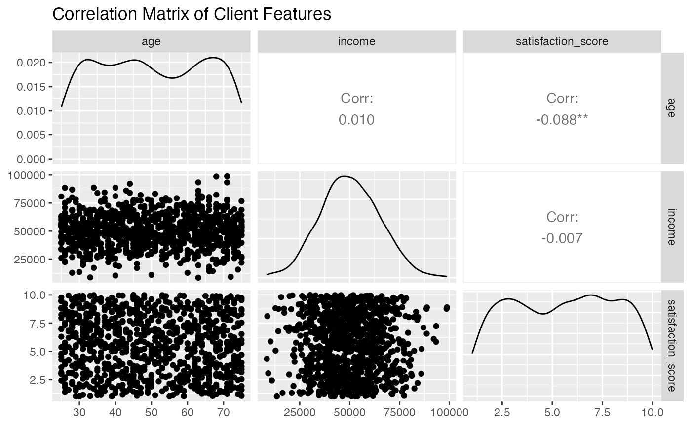

Data Visuals for Causal Inference
data-visuals.Rmdüìä Data Visualizations for Causal Inference
This vignette demonstrates useful plots commonly used in causal analysis and diagnostics.
1. üéØ Treatment Group Distributions
set.seed(123)
n <- 500
df <- data.frame(
treatment = factor(rbinom(n, 1, 0.5), labels = c("Control", "Treated")),
age = rnorm(n, mean = 35, sd = 10)
)
ggplot(df, aes(x = age, fill = treatment)) +
geom_density(alpha = 0.5) +
labs(title = "Age Distribution by Treatment Group",
x = "Age", y = "Density", fill = "Group") +
theme_minimal()
2. üîÅ Covariate Balance Before Matching
df <- df %>%
mutate(
income = ifelse(treatment == "Treated", rnorm(n, 60000, 10000), rnorm(n, 50000, 10000))
)
ggplot(df, aes(x = income, fill = treatment)) +
geom_density(alpha = 0.5) +
labs(title = "Income Distribution Before Matching",
x = "Income", y = "Density", fill = "Group") +
theme_minimal()
3. üßÆ Outcome by Group
df <- df %>%
mutate(
outcome = ifelse(treatment == "Treated", income * 0.0009 + rnorm(n), income * 0.0007 + rnorm(n))
)
ggplot(df, aes(x = treatment, y = outcome, fill = treatment)) +
geom_boxplot() +
labs(title = "Outcome by Treatment Group",
x = "Group", y = "Outcome") +
theme_minimal()